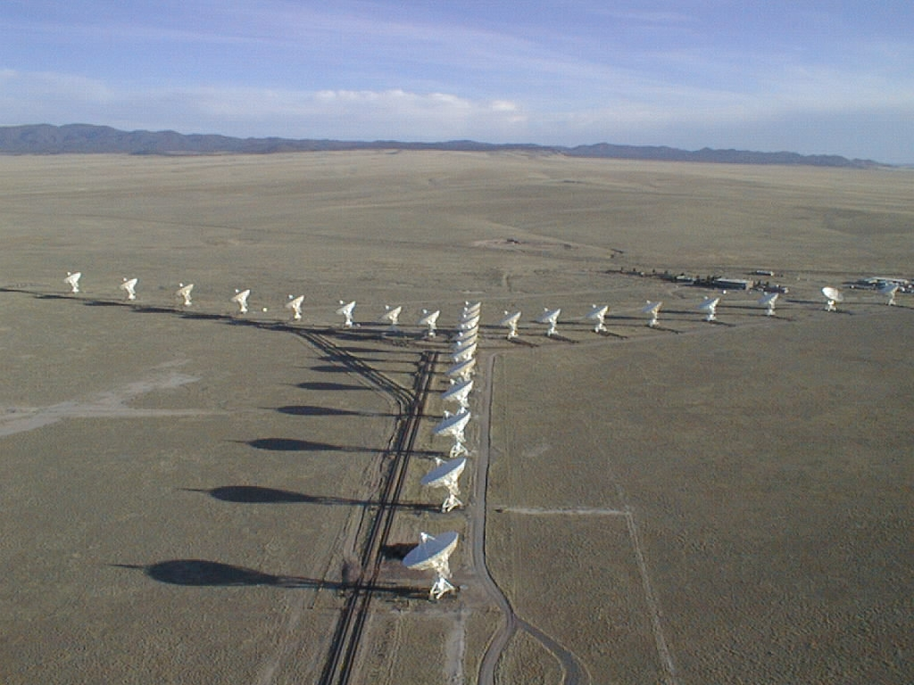
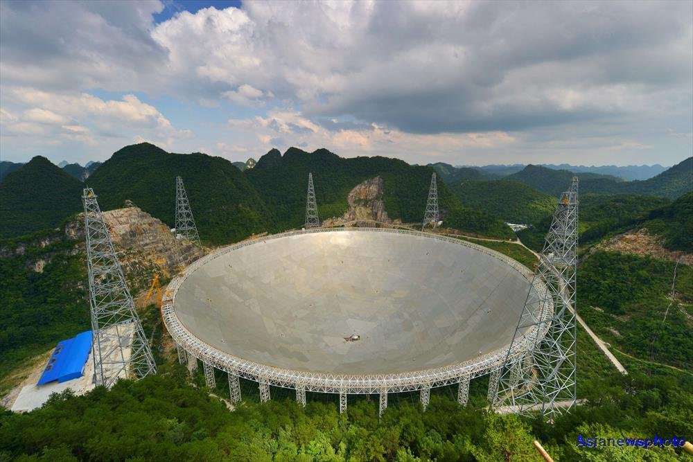
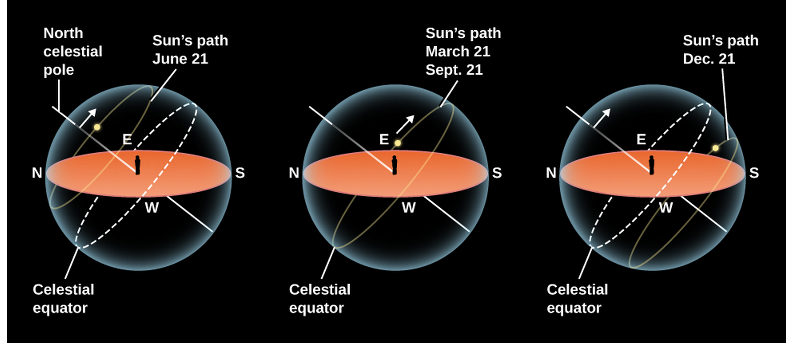
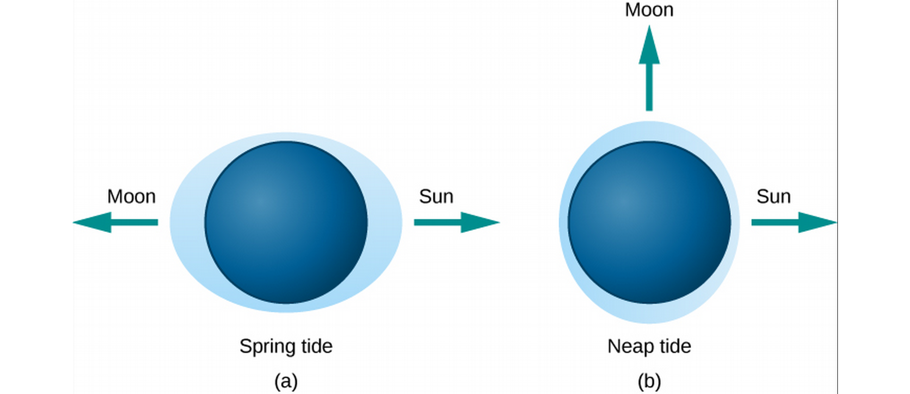

ASTR101 Ch 6, 4, 7
Table of Contents
- Ch 6 - Astronomical Instruments
- Ch 4 - Earth, Moon, and Sky
Ch 6 - Astronomical Instruments
Telescopes
- Only about 9000 stars visible to human eye.
- A telescope is a "bucket" for catching more light than your pupils normally would.
- Size matters.
- Light from the telescope can be spectrally separated.
- Then the amount of light is detected by a detector, a sensor.
How Telescopes Work
- A telescope collects light from a source, and focuses it into a point or image.
- Collecting can be done with a lens or curved mirror.
- Telescope light-gathering power is compared with apertures; diameters of the telescope opening.
- How much more light can a telescope with twice the aperture collect?
- Can use an additional lens, the eyepiece, to magnify the image.
Lenses
- Lenses are typically curved glass that refract, or bend, light rays. This example converges light towards the focus of the lens, a focal length away from its center.

- Refracting telescopes use a lens to focus light, while reflecting telescopes use a mirror.

- Light travels through a lens in refracting telescopes; imperfections anywhere in the lens or in the cut cause distortions.
- Different frequencies travel differently in lenses (remember prisms?), leading to chromatic aberration in refracting telescopes.
- Glass sags!
- Reflecting telescopes avoid these problems with a concave primary mirror, for which only a single surface needs good manufacturing.

Telescopes Today
- Millions/billions of dollars to build.
- Motorized drives.
- Huge steel supports for heavy mirrors (around 15 tons!).
- Largest diameter 10.4 m.
- Correct mechanically for sag (among other things).
- Can use multiple mirrors together, like 36 hexagonal mirrors in Keck telescopes.
Picking the Best Observing Sites
- Gemini and Keck telescopes cost $100 million, so we want prime real estate.
- Mountains, far from light pollution is good.
- Other factors include clear weather, atmospheric water vapor, air turbulence (which leads to bad seeing). We want low turbulence, stable air (like air that's flowed over water a long distance).
- So we want high, dark, and dry.
The Resolution of a Telescope
- Resolution refers to precision of detail in an image.
- Resolution measured in arcseconds (how big a quarter would look, 5 km away!).
- Good resolution can come from high aperture.
- Resolution is weakened by gases of different temperature which act as lenses, distorting the image. This is why the stars "twinkle"!
- It's also why we have telescopes on satellites in space.
- Another option is adaptive optics, where we undistort atmospheric distortion with a flexible mirror.
Visible-Light Detectors and Instruments
- The human eye has short integration time; the time to accumulate light energy before sending a signal (to the brain). A fraction of a second. Also, the brain doesn't have a usb cable to save our data, so we use detectors.
- Before the detector, we typically use a spectrometer.
Photographic and Electronic Detectors
- Used to take photographs, now use charge-coupled devices (CCDs) like those in cellphone cameras, where light radiation is measured in a grid of pixels. This is 90 times more sensitive to light than the old photograph method.
Infrared Observations
- Infrared Zoo
- These are difficult because at an average surface temperature of 300 K, the Earth emits radiation at a peak wavelength of 10μm (Wien's Law).
- Detectors are shielded from nearby radiation and cooled near absolute zero (1-3 K) through immersion in liquid Helium.
Spectroscopy
- Gives information about chemical composition, temperature, motion, and more.
- Spread out light by color (using prism or more commonly, a grating) and put detectors in each color's path to measure just that color.

Radio Telescopes
- 1930s, Karl G. Jansky measures radio signals from an unknown source, strongest about 4 minutes earlier on each successive day. What does he conclude?
Detection of Radio Energy from Space
- Note: radio waves are not Ke$ha's latest hits, they categorize a band of waves 104-1012 Hz. We can't hear/see radio waves.
- Moving charged particles can create waves, so can waves move charged particles!
- How to create a radio wave-mirror? Radio waves are reflected by conducting surfaces. Radio telescopes resemble giant satellite dishes.
Radio Interferometry
- Longer wavelengths are harder to resolve; the largest radio telescope has lower resolution than an amateur telescope.
- Radio astronomers take advantage of interference in radio waves by linking two or more telescopes into an interferometer, or better yet, into an interferometer array, such as the National Radio Astronomy Observatory's Very Large Array (VLA) near Socorro, NM, consisting of 27 25-m aperture telescopes on railroads over 36 km.

- If we combine the interferometry data later, we can separate the telescopes further; as in the Very Long Baseline Array (VLBA);

Radar Astronomy
- Radar is bouncing radio waves off of objects in our solar system and analyzing the reflection. Timing gives us the distance to, say, a mountain on Jupiter's surface.
- Using the Doppler effect, radar observations can determine the speed of objects!
- Best facility was 305-m telescope in Arecibo, Puerto Rico, in a bowl shape with hills, wherein the detector is moved. Now surpassed by Five-hundred-meter Aperture Radio Telescope (FAST) in Pingtang Cty, China, which moves plates in the dish to focus on different objects.


Observations Outside Earth's Atmosphere
Airborne and Space Infrared Telescopes
- Water vapor is the main source of atmospheric interference, and it's concentrated in the lower part of Earth's atmosphere. Even 100 m elevation helps!
- Airplane observations have been made since 1960s, and are still being made.
Hubble Space Telescope (HST)
- Named for Edwin Hubble, who discovered the expansion of the universe in the 1920s (more on that later).
- Mirror so precise that if it were scaled to the size of the entire continental US, there would be no hill or valley larger than ~6 cm.
- Scientists saved money by not testing it before launch.

- Turns out the mirror's shape was off by the width of a human hair, enough to make things blurry.
- December 1993, astronauts captured the orbiting telescope and fixed it (even put a new camera on!).
- The HST has been upgraded and repaired multiple times since.
High-Energy Observatories
- Mirrors are harder for X- and γ- (gamma-)rays, which go through matter, but this is rectified in satellites (somehow).
- Gamma-ray detection can be done indirectly by observing byproducts of their collisions with charged particles on Earth.
The Future of Large Telescopes
- Large Synoptic Survey Telescope (LSST, 2021): Telescope with large field of view, scans sky for transients or events that happen quickly, such as exploding stars.
- Cherenkov Telescope Array (CTA, 2021-2025): Measures gamma rays from ground.
- Others working on larger-mirror telescopes (a third the size of a football field, composed of smaller mirrors).
Ch 4 - Earth, Moon, and Sky
Earth and Sky
- Earth's orbit is nearly a perfect circle
- Where do seasons come from?
- If it's Summer here, what season is it in Australia?
Latitude and Longitude
- Great circles: circles on surface of sphere sharing sphere center.
- Latitudes are meridians, passing through N and S poles.
- Longitudes start at Greenwich, England (GMT!), the Prime Meridian, 0°. They go 180° east and west.
- How can we use Polaris to find our latitude?
- How can we find our latitude?
- How can we find our longitude? (EC)

Figure 10: Djexplo/Wikimedia Commons
The Seasons
- What we know:
- The Earth's orbit is nearly circular, changing by <3%.
- Earth is closest to the Sun in January.
- The two hemispheres have opposite seasons.
- Conclusion: The seasons are caused by Earth's tilt!
- How, exactly?


- So one hemisphere gets more heat than the other during its Summer.
- But it also gets that heat for longer! Longer days!
- Does the sun rise in the Northeast or Southeast?

Limits of the sun's latitudinal movement
- Northernmost: June 21 (Summer Solstice)—sun over Tropic of Cancer (23° N), no nights in Arctic Circle, no days in Antarctic Circle.
- Southernmost: December 21 (Winter Solstice)—sun over Tropic of Capricorn (23° S), no days in Arctic Circle, no nights in Antarctic Circle.
- Sun crosses equator at vernal (Spring) and autumnal (Fall) equinoxes—North and South hemispheres are both 12 hours here.


The Seasons at Different Latitudes
- The Sun appears to rise earlier and set later because of atmospheric refraction.
- Twilight is when the sun is 18° below the horizon and the sky doesn't appear completely dark.
- This has an effect on seasons, weather, and day lengths.
- Eg, July and August are hotter than June because the atmosphere takes time to heat up, just like the day is hotter at sunset than sunrise.
Keeping Time
The Length of the Day
- The solar day is based on the sun's position in the sky. There's also the sidereal day, based on the actual 360° rotation of the Earth.
- Recall from last week's demo that a solar day is about 4 minutes longer than a sidereal day because of the Earth's orbital motion.

Apparent Solar Time
- So stars rise earlier and earlier according to the apparent solar time we use, based on the position of the Sun in the sky.
- The meridian is the great circle that crosses our zenith; hence a.m. (ante meridiem) and p.m. (post meridiem).
- Apparent solar time is not great for Astronomy, since the apparent solar day length varies in the year, the slight elliptical orbit of the Earth, and Earth's axis not being perpendicular its orbital plane.
Mean Solar Time and Standard Time
- Mean solar time is what we use, based on the average value of the solar day in the year, 24 hours—noon is when the Sun crosses the meridian.
- Time changes based on longitude, continually, but we split Earth into time zones roughly one hour each (fun fact, India chose a half-zone, 5.5 hours, and China only uses one time zone!).
- DST (daylight saving time) is ahead of the local standard time by one hour (Fall back, Spring Forward), to prolong sunlight into evening hours.
The International Date Line
- Lifehack, travel around the world to go back in time. Just kidding, the International Date Line, along the 180° meridian, changes the calendar date by one day. No loopholes!
The Calendar
The Challenge of the Calendar
- The entire calendar is based on Astronomy:
- Day is based on Earth's spin—defined as 1.0000 solar day.
- Month is length of full lunar cycle—29.5306 days.
- Year is based on Sun, and Earth's rotation around it—365.2422 days.
- Week? After Roman gods assigned to planets.
- These don't divide evenly..
Early Calendars
- Stonehenge (built over three periods, 2800-1500 BCE) concentric series of stones and ditches—some aligned with Sun and Moon during critical rising and setting periods (such Summer and Winter solstices).
- Mayans had a complex calendar which could predict Astronomical events through an observatory.
- Ancient Chinese calendar centered around 12-year Jupiter cycle—these are the 12 year signs of the Zodiac, which correspond to Jupiter's position along the Zodiac.
- Our calendar derives from the Sumerians, continuing with Egyptians and Greeks, leading to Ceasar's Julian Calendar, at 365.25 days/year, using leap years (with one extra day, 2/29) every four years (years divisible by 4).
- The Islamic Calendar is still lunar.
The Gregorian Calendar
- Pope Gregory XIII corrected the 11 minutes/year that the Julian calendar was off—off enough that the calendar was 10 days off by 1852.
- October 4, 1582, 10 days were immediately skipped in the calendar (to get back on track). Like Julian calendar, every four years is a leap year—except on centuries not divisible by 4 (e.g., 1700, 1800, 1900). The year 2000 was a leap year, but not the year 1900.
- Catholic countries followed suit, other countries later—American colonies skipped from September 2, 1752 to September 14, 1752 (12 days!). Russia had to omit 13 days by the time it adopted the calendar during the Bolshevik revolution.
Phases and Motions of the Moon
- Moonlight is literally reflected sunlight.
- Because of angles, results in phases (difference appearances, like full and crescent moon).
Lunar Phases
- Sun only moves 1/12 of the sky in one month—we can ignore this when looking at (monthly) lunar cycles.
- Sun illuminates half the moon, we observe at an angle.

- Waxing=growing, waning=shrinking
- Moon rises later and later than sun each day.
- Full moons are not generally blocked by the Earth—the diagram is not to scale and the Earth-Moon distance much larger, so Earth's shadow misses the moon most of the time (except lunar eclipses). The moon's also 5° from Earth's orbital plane.
The Moon's Revolution and Rotation
- Period of revolution and period of rotation are the same (this is called synchronous rotation),
- So, we only see one side of the moon!
- We measure the solar month—the period of the moon's cycles—as 29.5306 days, but the sidereal month (with respect to the stars) is 27.3217 days.
Ocean Tides and the Moon, The Formation of Tides
- Earth is stretched to a prolate spheroid by the moon's varying gravity across it, only about 20 cm.
- The effect is complicated by land mass shapes, friction, earth's rotation, wind, variable ocean depth, and so some places have large tides, some places small tides.

Eclipses of the Sun and Moon
- Sun and moon look like they're the same size (1/2°)—but the Sun is 400 times larger, and 400 times farther away—what a coincidence!
- An eclipse consists of dark umbra and lighter penumbra.

Eclipses of the Sun
- Are a possibility twice a year, when the lunar and solar paths cross.
- A partial eclipse occurs when the Moon simply partially covers the Sun.
- An annular eclipse is when the moon appears smaller than the sun and the sun's ring is seen (this is more common).
- A total solar eclipse occurs when the Moon is nearer than its average distance to Earth, and completely covers the sun.
- Total solar eclipse is a small area on the Earth, along the eclipse path.
- Lasts less than 7 minutes at any point on the path.
- Surrounded by larger area penumbra.

Eclipses of the Moon
- In a lunar eclipse, Everyone on Earth sees the same Earth shadow on the moon, so these are much less rare for a given location than a solar eclipse.
- Earth's shadow covers four moons' widths.
- Can last as long as 1h40.